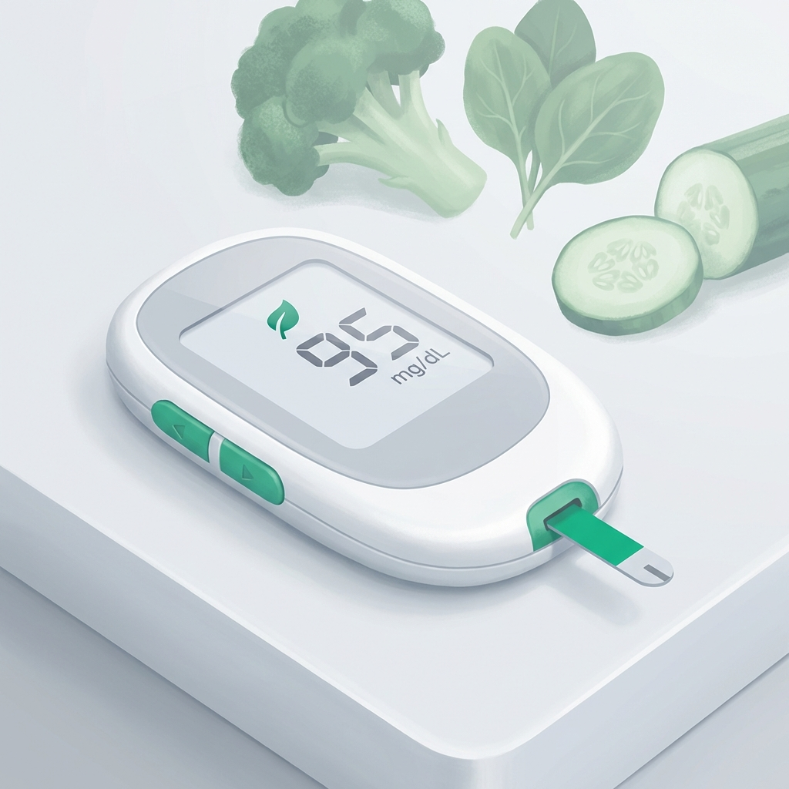
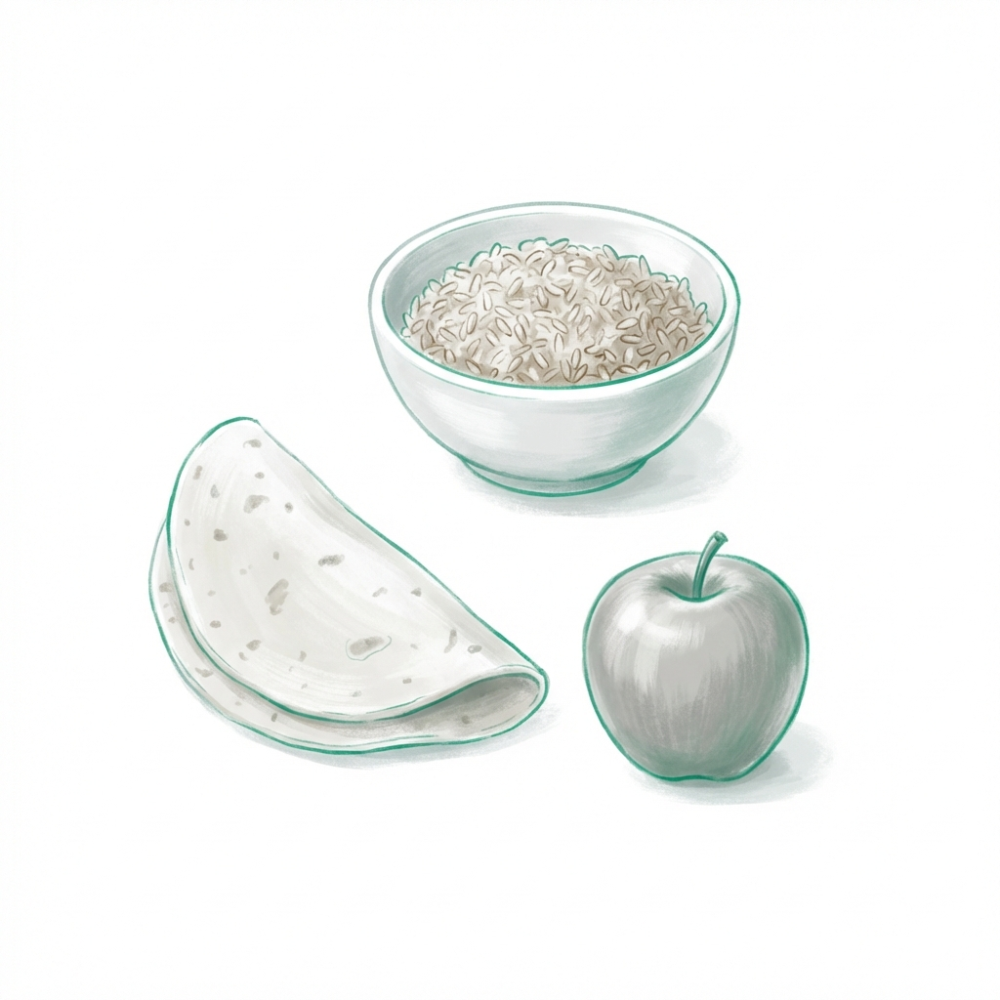
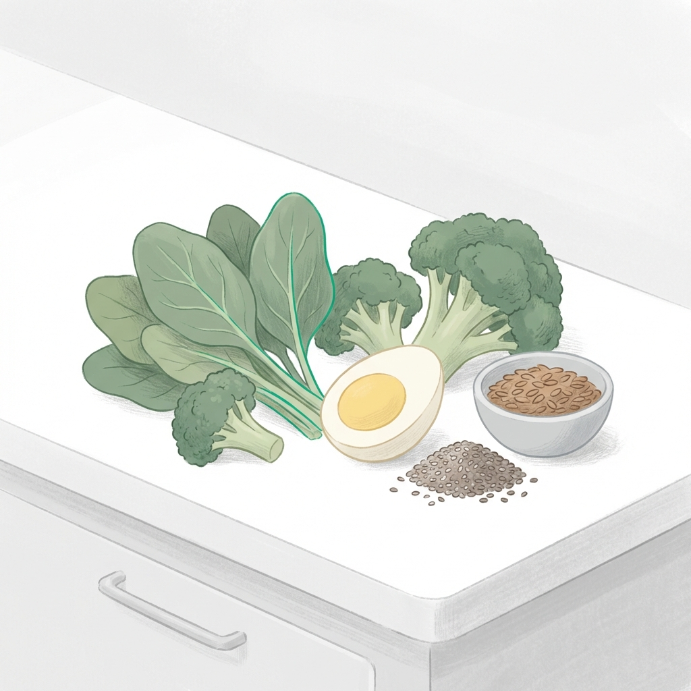

Nutrición Clínica para el Control Metabólico de la Diabetes
Estrategias especialistas para la estabilidad glucémica, diseñadas para integrarse en tu día a día con rigor científico y cercanía profesional.
El manejo de la diabetes en la clínica moderna trasciende la restricción. Nuestro enfoque se centra en la optimización metabólica: entender la respuesta de tu cuerpo a los nutrientes para estabilizar la glucosa de forma sostenible.
En Clínica Denki, implementamos protocolos de nutrición clínica que estabilizan la hemoglobina glucosilada (HbA1c) y reducen el riesgo de complicaciones, priorizando siempre la tranquilidad del paciente.
¿Por qué un enfoque clínico para tu diabetes?
Control preciso para una vida plena.

Control Glucémico Médico
Estrategias avanzadas para estabilizar la HbA1c y reducir picos de azúcar mediante nutrición técnica.
Educación en Diabetes
Capacitación en el uso de glucometría, conteo de carbohidratos y ajuste de raciones según tu terapia.
Estrategias de Nutrición Avanzada
No usamos dietas de cajón. Usamos herramientas metabólicas adaptadas a ti.

Conteo de Porciones: Te enseñamos a visualizar tus raciones de forma técnica, permitiéndote tomar decisiones seguras sobre tu alimentación.

Recursos Educativos
Aprende más sobre el manejo de tu condición.
Preguntas Frecuentes
¿Debo dejar los carbohidratos por completo?
No. El cuerpo necesita glucosa para funcionar. Lo que hacemos es seleccionar los carbohidratos de mejor calidad y distribuirlos inteligentemente.
¿Puedo revertir la Diabetes Tipo 2?
Se habla de "remisión". Mediante la nutrición clínica y pérdida de grasa visceral, es posible normalizar niveles de glucosa incluso sin medicamentos en algunos casos.
¿Atienden diabetes tipo 1 en niños?
Sí, el soporte nutricional en Diabetes Tipo 1 es vital para asegurar el crecimiento normal y evitar hipoglucemias severas.
Acompañamiento Clínico para tu Salud Metabólica
Accede a una evaluación profesional y toma el control de tu tratamiento nutricional con seguridad.
Atención en Consultorio, en Línea y a Domicilio